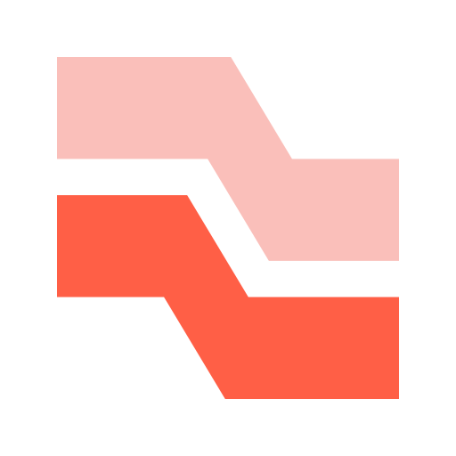
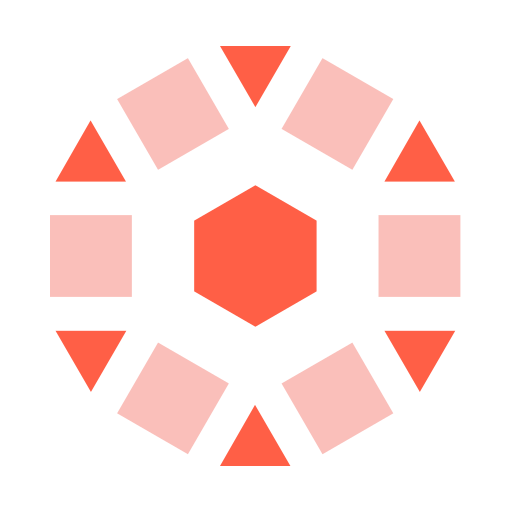
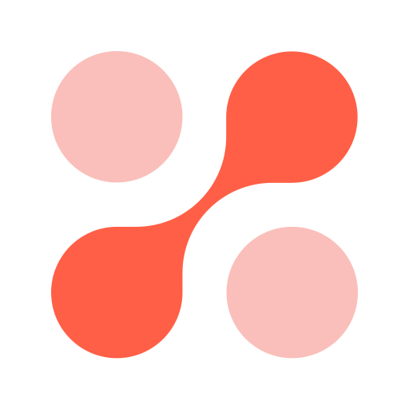
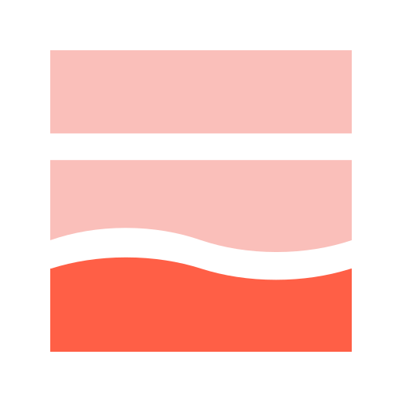
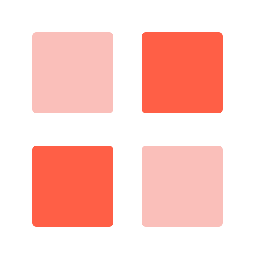
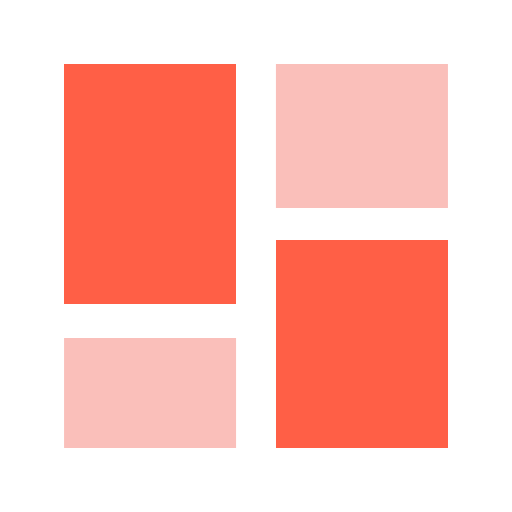
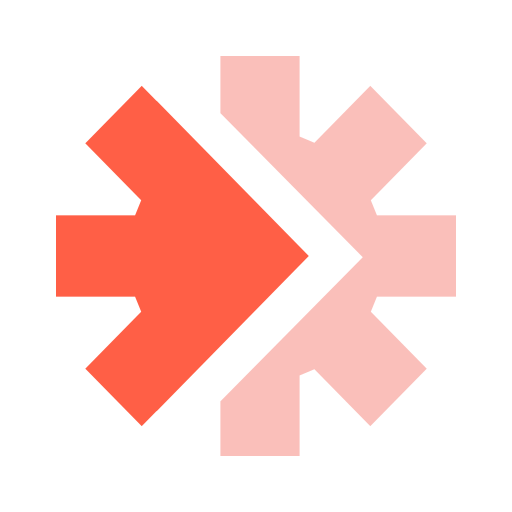

A governed collections worklist for the Chief Risk Officer and the Head of Collections
All data is synthetic. The bank, its customers and its staff are invented.

18 source feeds and the letters read as they land, checked and reconciled

row filters and masks on every published table

letters triaged by ai_query; worklist scored and briefed

the case queue officers work, with a locked history
three governed agents answer as the signed-in user

overview, worklist, case and approvals

a different model family checks the worklist briefs

Lakeflow Jobs starts the cycle when a source system's manifest arrives, and runs every stage in order.Gross NPA, conduct exposure in one number, and whether the data behind it is complete.
The accounts to work first, the reasons in words, and the ones on hold.
Update the case, propose an allocation, see the control refuse an uncertified agent.
A plain-language question, answered with only the rows that person may see.
| Value driver | From the data | Assumption | Illustrative value |
|---|---|---|---|
| Better recovery on the worked book | INR 44.1 crore on the worklist | Cure on the list rises by 1 percentage point | INR 44 lakh a year |
| Fewer conduct breaches | 2,499 contacts outside 08:00 to 19:00 | The reassignment rule removes half of them | About 1,250 fewer |
| No contact while a grievance is open | 40 accounts held today | Each is one less likely Ombudsman escalation | 40 fewer at-risk cases a month |
| Analyst time | 18 source feeds reconciled by hand | 2 analysts for 3 days a month | 6 analyst days a month |
Figures are illustrative. Each assumption is stated so the bank can put in its own number.
Every planted defect caught with the exact count. 176 of 177 files reconcile.
The same query, run as each persona. Unity Catalog decides the rows and the masks.
Every misconduct letter found. Briefs follow the bank's rules 100% of the time and are judged by another model family.
An allocation to an uncertified agent is refused before anyone approves it.
Auto Loader, declarative pipelines, quality rules and quarantine
row filters, column masks, tags and the conduct controls as functions
ai_query in the pipeline and judges from another model family
Postgres for the case queue and the approvals
three governed agents with benchmarks
runs as the signed-in user
one job, started by file arrival
published without embedded credentials
Name a collections manager and a compliance reviewer this week, and we agree the success criteria in week one.